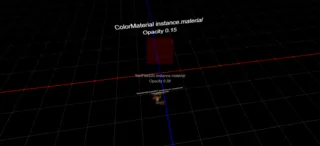

3D Material & Texture Material
Material Opacity - RedGPU WebGPU Example
An example testing the translucency effect by adjusting the opacity of the material.
재질의 불투명도(Opacity)를 조절하여 반투명 효과를 테스트하는 예제입니다.

3D Material & Texture Material
An example testing the translucency effect by adjusting the opacity of the material.
재질의 불투명도(Opacity)를 조절하여 반투명 효과를 테스트하는 예제입니다.
